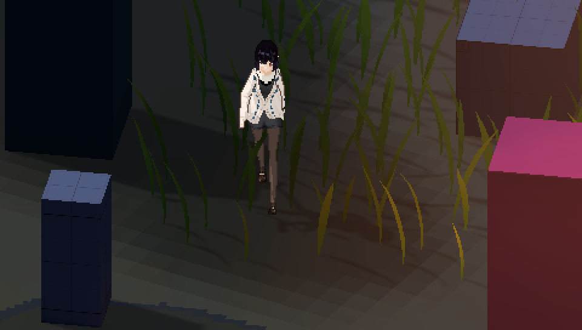
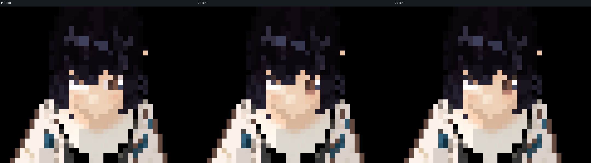
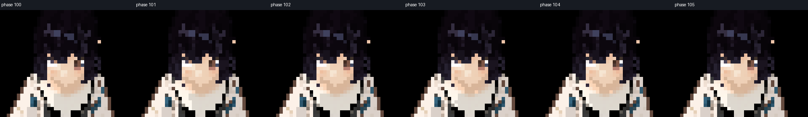
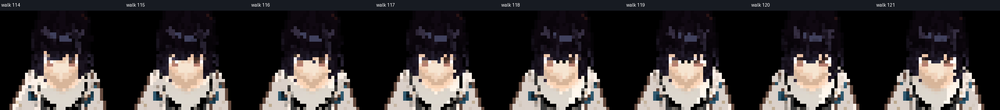
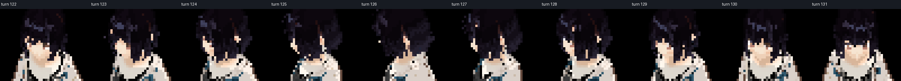

제품77은 그대로입니다. 수정한 것은 외부 관찰기의 Editor 입력 정책 대입입니다. 동적 컴파일에서 UNITY_EDITOR=False여서 기존 #if 안 대입이 제거돼, 이벤트가 Editor에 도착하고 게임 action은0이었습니다. guard만 제거한 동일12프레임은 전부 정상 Dynamic으로 전달됐습니다. 매 프레임 queue와 전환 때만 queue 둘 다 통과했습니다.
실패 이벤트 · 실제 심볼 확인 · guard만 수정한 대조 · 실행/컴파일 기록
원본480×272 논리 격자의 헤어/눈 ROI와960×544 최종 출력은 구분합니다. 아래 strip은 nearest 정수 확대입니다. GIF는 검토를 위해 프레임당120ms로 느리게 표시하며 실시간 속도가 아닙니다.
첫 전체 실제 출력:

같은 프레임 pre348 / frozen76 / current77:


느린 GIF · 최종 native ROI.6프레임의 feature/eye label은 동일했습니다. 다만 카메라 추적으로 실제 표시 위상 변화가0.000168셀 정도라 전체0..1픽셀 sweep 검증이 아닙니다. 머리 RGB 차이도 남습니다: 최대 채널34인 목 부분은348 이전에도 존재합니다.

느린 GIF · 최종 native ROI. 위 안검 출력은 두 눈 각각1셀을 유지했습니다. 홍채는2~4셀로 변합니다.118→119에서eye1은4→2이나 같은 프레임 frozen76도 동일하고, 보존된 pre348 홍채에서 변화합니다. Close morph는0이며 영역 budget도2로 동일합니다. 이를 안정화 성공으로 보지 않습니다.

느린 GIF · 최종 native ROI. 실제 얼굴 방향/앞머리 가림/가시량이 함께 변하므로 화면 셀 수 차이만 flicker로 분류하지 않았습니다. 실제3D source/UV/triangle/barycentric과 projection/depth를 보존했습니다.
GPU/보존 검증 · 눈ID별 프레임 수치 · 원색/잔색차 좌표 추적 · 실제24프레임 fixture
함수: FIXED_MotionScope83.cs Start/QueueProbe83, TESTED_MotionScope82.cs Start/Dispose, TESTED_Capture85.cs Tick/Capture/Finish, inspect_motion85.py source-correspondence 검사. 이번에는 입력 관찰기만 수정했습니다.